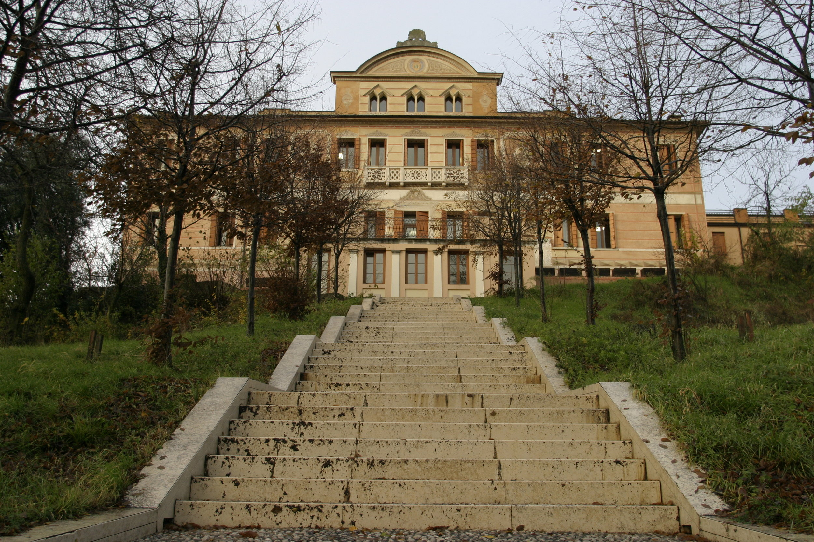
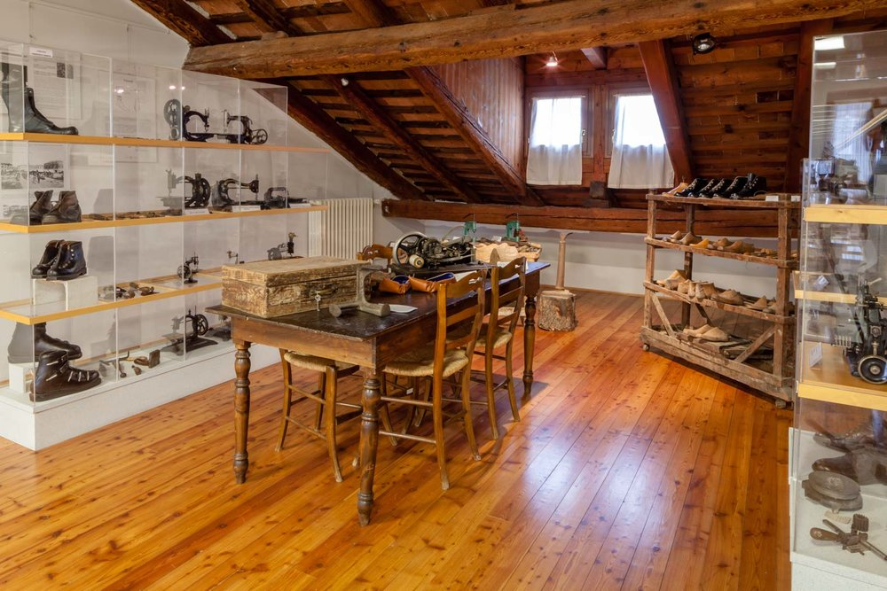
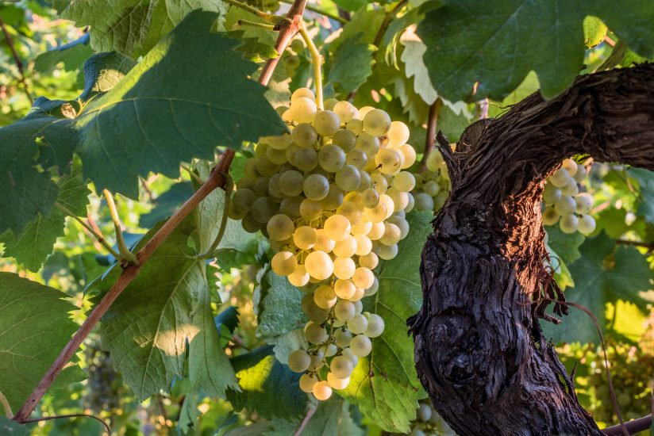
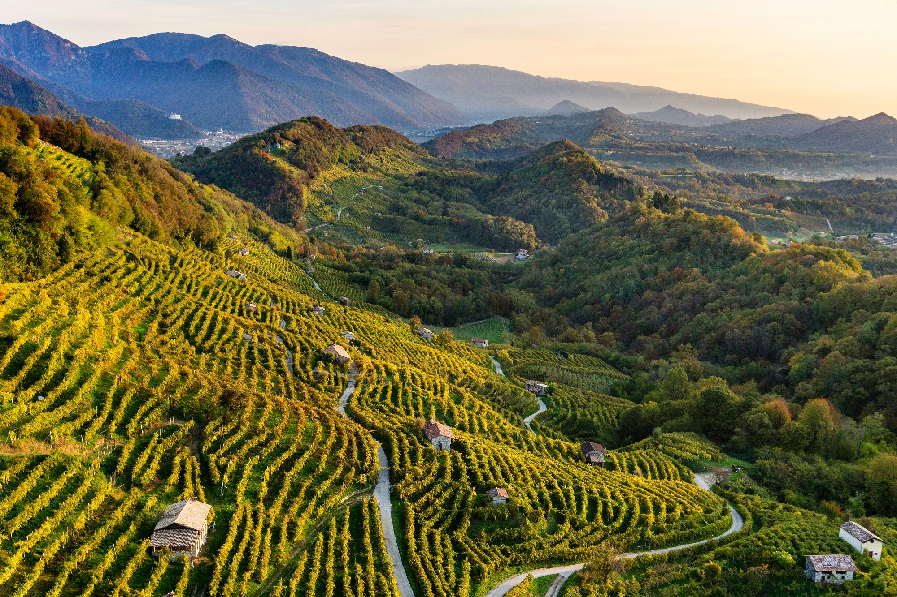

IL MUSEO DELLO SCARPONE
La tradizione calzaturiera del montebellunese prende avvio verosimilmente da quella fiorita all’interno della Repubblica di Venezia, di cui Montebelluna diviene parte nel XIV secolo. Ai primi dell’Ottocento, nell’entroterra veneto Montebelluna si identifica già come crescente centro di produzione calzaturiera con la presenza di 10 calzolai censiti nel 1808. Nella prima metà del XIX secolo non si ebbe uno sviluppo tecnologico riguardante la produzione, e l’oggetto maggiormente richiesto erano le gallozze, scarpe per uso contadino e da montagna che verranno realizzate a mano fino all’avvento della macchina da cucire intorno al 1860. Negli anni Trenta Montebelluna investe nella produzione di scarpe da sci dando inizio ad una specializzazione in questo settore. Nel 1954 raggiunge la massima popolarità quando la spedizione guidata da Ardito Desio raggiunge per prima la vetta del K2 calzando scarponi La Dolomite, la fama di Montebelluna come centro della produzione calzaturiera venne favorita ulteriormente dai Giochi Olimpici Invernali tenutisi a Cortina d’Ampezzo nel ‘56, arrivando a raggiungere un livello di notorietà mondiale. Negli anni Sessanta grazie allo sviluppo tecnologico si iniziano a produrre i primi scarponi in plastica.


Nel 1969 la missione Apollo 11 diede l’ispirazione per la realizzazione di una delle calzature più iconiche dei decenni successivi: il Moon Boot. Negli anni Settanta si assiste ad una diversificazione nella produzione: non più scarpe da montagna o da sci ma anche scarpe da calcio, tennis, ciclismo, danza, ghiaccio e tempo libero. Alla fine del decennio il settore calzaturiero montebellunese conta 511 aziende, 12000 addetti ed un reddito pro capite fra i più alti in Italia.
Negli anni successivi però la produzione del Distretto dovette far fronte ad una battuta di arresto dovuta sia ad una serie di inverni molto miti con scarse precipitazioni e anche alla concorrenza dei Paesi dell’Europa Centrale, Est Europa e Sud-Est asiatico. La fine degli anni Ottanta vede il successo delle
scarpe da trekking. Negli anni che seguono la produzione del montebellunese include nel suo già vasto ventaglio anche quella dei pattini in linea, che hanno segnato la moda degli anni Novanta, e quella della scarpa da snowboard. Fra
le diversificazioni vincenti di quegli anni, ancora estremamente popolare oggi, è quella che ha permesso l’evoluzione della scarpa sportiva in scarpa da città.
LE COLLINE DEL PROSECCO
Patrimonio dell’Unesco dal 2019, le colline del Prosecco situate nella zona tra le cittadine di Conegliano e Valdobbiadene sono il simbolo della zona denominata “Quartier del Piave” e sono caratterizzate da una particolare conformazione geologica che consiste in una serie di colline con una cresta stretta e pendii ripidi su entrambi i fianchi, intervallati da piccole valli parallele. Il territorio comprende principalmente le zone viticole per la produzione del Prosecco di Conegliano-Valdobbiadene DOCG.


Le Mostre del Vino, nate 50 anni fa per valorizzare e promuovere i prodotti tipici dell’Alta Marca Trevigiana, fanno parte della tradizione del territorio tra Conegliano e Valdobbiadene. La cosiddetta “Primavera del Prosecco” è una manifestazione che dura da marzo a giugno che comprende tutta l’area. Questi eventi degustativi, gastronomici e anche culturali attirano molti turisti stranieri che apprezzano molto la qualità del vino e la varietà di eventi offerti.
Questa zona, inoltre, è stata scenario del film “Finché c’è prosecco c’è speranza” del 2017 girato da Antonio Padovan. La pellicola narra le vicende investigative a seguito del misterioso suicidio di un importante produttore di vino biologico.